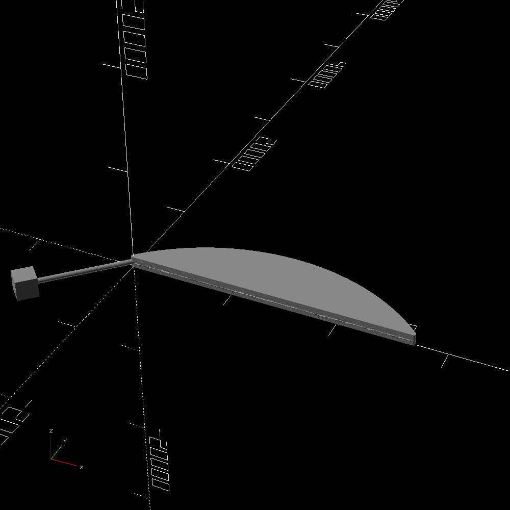
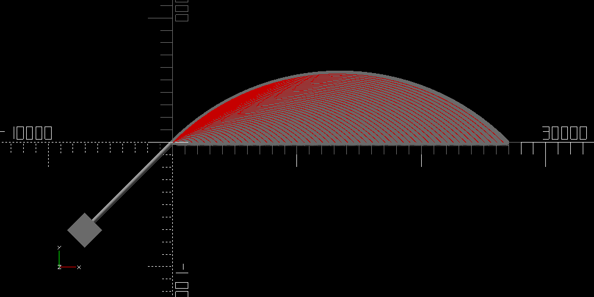

The machine takes up a space about 30m by 15m by 2m.
| atomic number | element name | amount |
|---|---|---|
| 26 | iron | 940.433819556142 grams |
| 27 | cobalt | 2.52207251608238 grams |
| 28 | nickel | 55.5710893374084 grams |
| 29 | copper | 470.216909778071 milligrams |
| 30 | zinc | 769.445852364116 milligrams |
| 31 | gallium | 32.4877137664849 milligrams |
| 32 | germanium | 89.7686827758135 milligrams |
| 33 | arsenic | 7.69445852364116 milligrams |
| 34 | selenium | 55.5710893374084 milligrams |
| 42 | molybdenum | 5.12963901576077 milligrams |
| 44 | ruthenium | 3.46250633563852 milligrams |
| 45 | rhodium | 683.951868768103 micrograms |
| 46 | palladium | 2.82130145866843 milligrams |
| 47 | silver | 598.45788517209 micrograms |
| 48 | cadmium | 1.88086763911228 milligrams |
| 49 | indium | 188.086763911228 micrograms |
| 50 | tin | 5.12963901576077 milligrams |
| 51 | antimony | 512.963901576077 micrograms |
| 52 | tellurium | 8.97686827758135 milligrams |
| 74 | tungsten | 512.963901576077 micrograms |
| 75 | rhenium | 209.460259810232 micrograms |
| 76 | osmium | 2.82130145866843 milligrams |
| 77 | iridium | 2.30833755709235 milligrams |
| 78 | platinum | 4.18920519620463 milligrams |
| 79 | gold | 726.69886056611 micrograms |
| 80 | mercury | 1.06867479495016 milligrams |
| 81 | thallium | 333.42653602445 micrograms |
| 82 | lead | 5.9845788517209 milligrams |
| 83 | bismuth | 294.954243406244 micrograms |